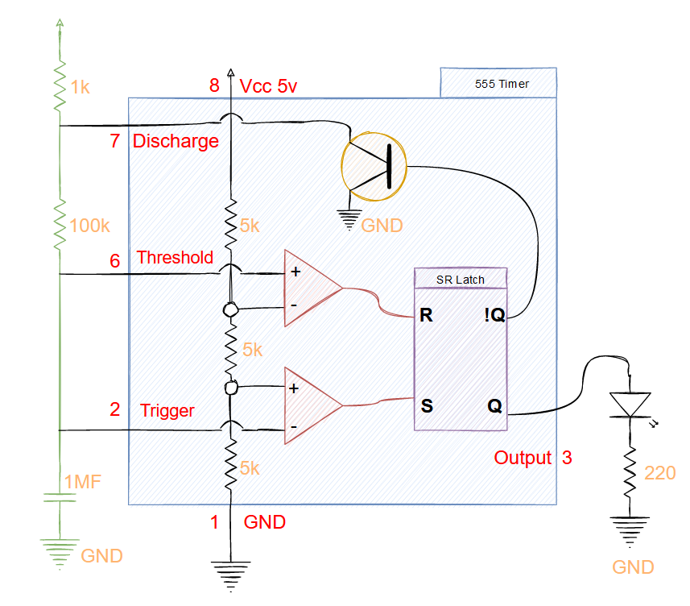
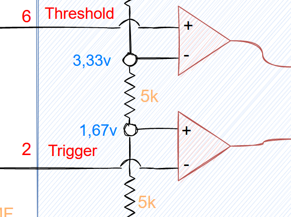
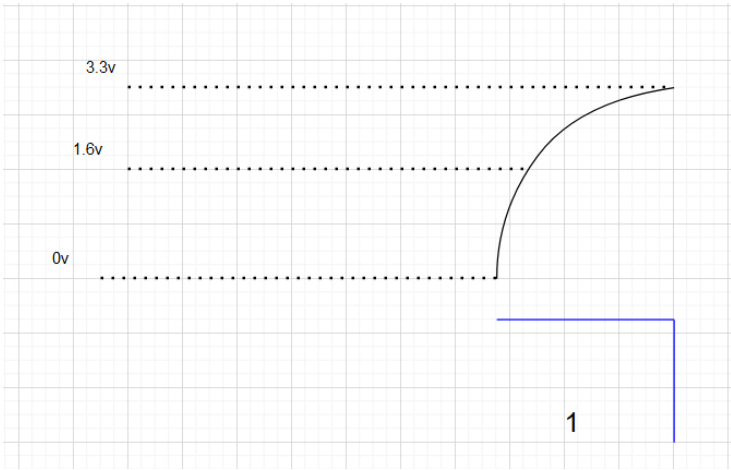
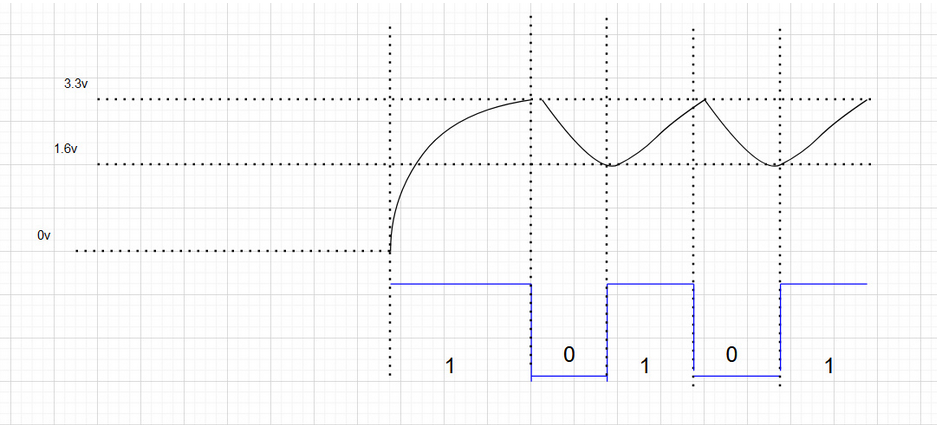
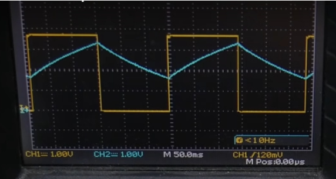
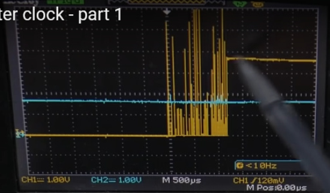
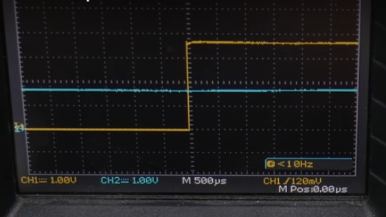
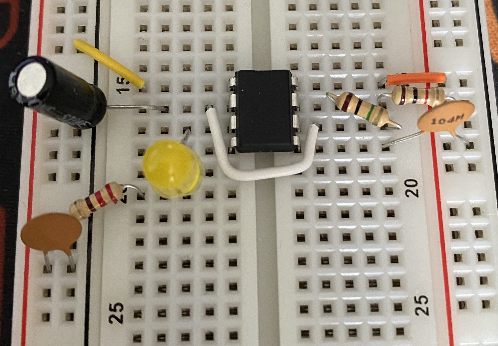
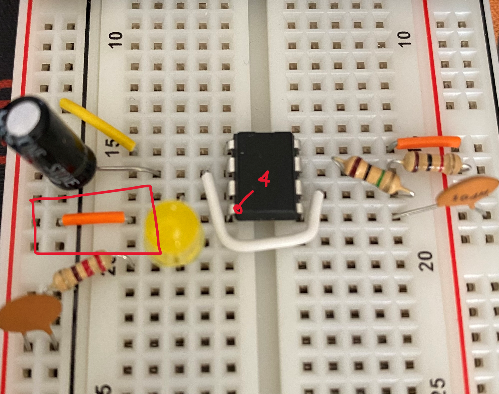
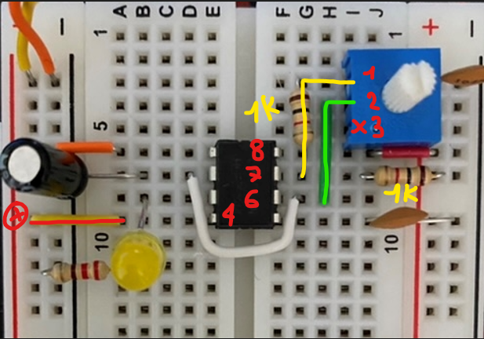

Adrien Lasalle
Saturday, June 4, 2022
#1 Astable 555 Timer
Disclaimer: I’m following the amazing series of videos from Ben Eater using his electronic built kit for the 8 bits computer. This series of post is only there for my personnal understanding about electronic and this amazing project. I ablsolutly recommand you to watch his series of videos instead of reading this post of course ! Play-List-Link
Disclaimer 2: I’m not an expert at all, Just a beginner who wants to learn, I stay tuned for corrections or advice! Thanks !
555 Timer - Overview
Definition:
The 555 timer IC is an integrated circuit (chip) used in a variety of timer, delay, pulse generation, and oscillator applications.
In this project, the 555 timer will be useful on all the mods.
Datasheets
The datasheet of this 555 timer is available here: Datasheet 555 Timer PDF. Page 3 you can have a look at the PINs number and usage.
- 1 : GND
- 2 : Trigger
- 3 : Output
- 4 : Reset
- 5 : Control Voltage
- 6 : Threshold
- 7 : Discharge
- 8 : Vcc
Simple usage
For a better understanding of the schema here is the picture of a simple working 555 timer with an LED output. Here is the list of the components:
- 1 Mf capacitor
- 1 Led
- 1 220 resistor
- 1 1k resistor
- 1 100k resistor
- 1 555 Timer
This simple circuit will make the LED blink at 1 or 2 second intervals, but how does it work inside this 555 timer?
Here is a simplified schema of this circuit and the inside of the 555 timer.
We can see a clear Path inside with 5v at the top, then 3 5k resistors then GND at the end. This Path is used to create a voltage divider, so that way the voltage will be divided like so: 
The first stage is 1,67v and then the second stage is 3,33v then on top we got 5v. The Voltage value set up the inputs for the 2 comparators just before SR Latch.
Comparators
- If the positive input is above the negative input the comparator switch to ON (1)
- If the positive input is below the negative input the switch turns OFF (0)
From PIN 2 (red) 0v go to the first comparator and since 0v is below 1,67vm the comparator is going to be turned ON and trigger the SET (S) PIN of the SR Latch. The SET is ON so it will trigger the output to the LED and turn it ON.
From PIN 6 (blue) 0v go to the second comparator but here 0v is below 3,33v so the comparator will not trigger the R pin of SR Latch,
Stage change
The capacitor (1MF) will charge the current until it reach 1,67v. Then it’s going to set the first comparator to 0.
The current will charge until 3,33v then turn the second capacitor to ON, so that way the LED is OFF and the current flow through the R PIN of SR Latch to the Discharge part of the 555 timer.
The output (Green) is going to be RESET and the current will flow to the discharger through the 1k resistor. The capacitor will also discharge itself to the discharger. In green, you can see the discharge Path.
It is much more understandable to see the output on the schema below:
The output 1 is the state of the LED, 1 ON and 0 off.
Som the current is RESET at 3,33v and it will reduce until it is below 1,67v. Now the first comparator will be turned ON and the LED too.
Here is the full output after a few second:
Timing
Depending on the resistors and capacitor value (on the circuit not inside the 555 timer) you can manipulate the discharge timing so it can take more or less time.
In the datasheet, this part is detailed with calculus (page 11)
Reduce the noise
For more precision on the output we must add a ceramic capacitor next to the component si this will reduce the noise between the reset and the output. You can see the noise using an oscilloscope like so :
Here is an example RAW without zooming.
And here is an example of the noise if you zoom
To prevent any reset by error or wrong value on the component you can add ceramic capacitor and you’ll reduce the noise like so :
 2 ceramic capacitors of 0,1 have been placed, one between GND and PIN 5 and the other one on GND and 5v.
Protect RESET PIN
The documentation of the 555 Timer recommend attaching the PIN 4 to 5v to avoid any RESET by mistake.
PIN 4 is connected inside to SR Latch and can RESET manually this one, so that’s why it is recommended to link the PIN 4 to 5v.
Control the Speed
You can add a variable resistor and remove the 100k resistor to control the speed of changing the resistor value.
We need to add a 1k resistor between PIN 7 and the variable resistor to avoid any bypass of the discharge through the discharger, that way it will pass by the resistor and take its time to discharge.
You have now a good look at the first mod of this circuit!
Demo
The next post will talk about the second mod of the 555 Timer which will allow us to manually control the clock timer with a button.